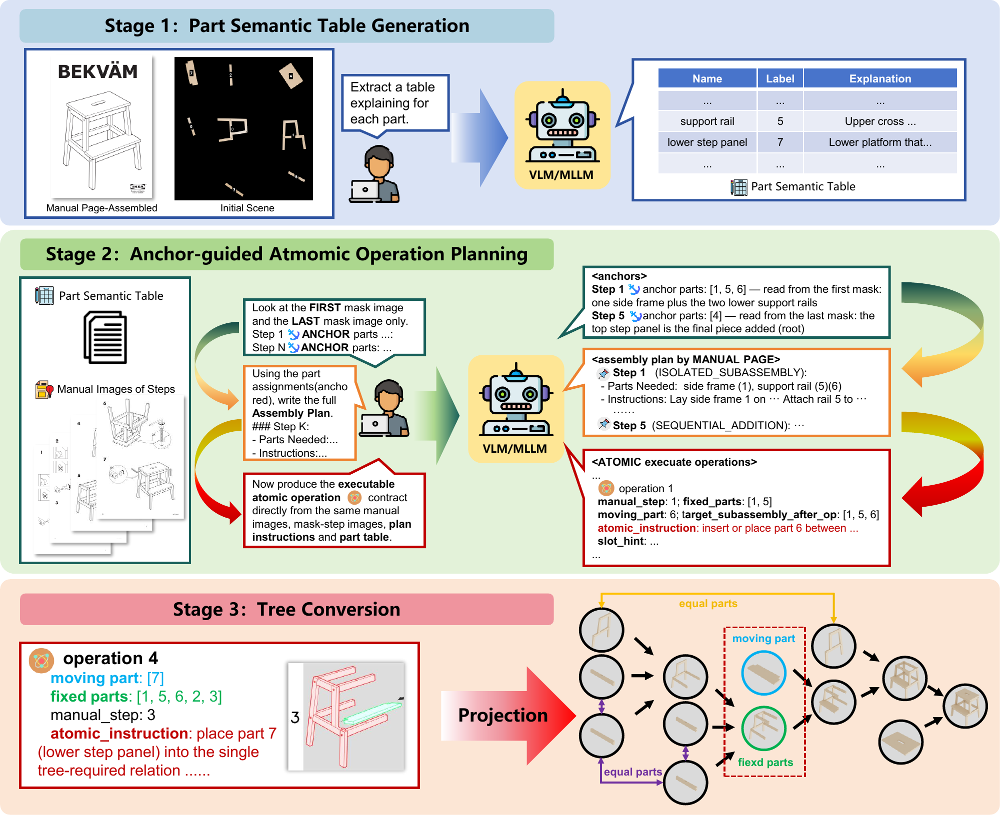
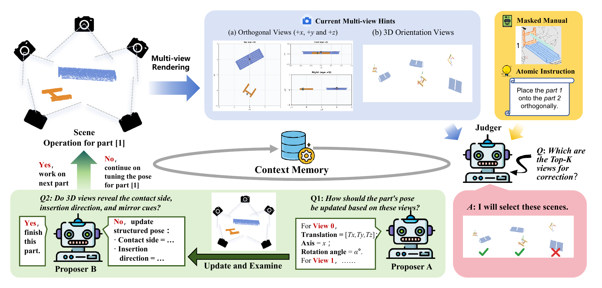
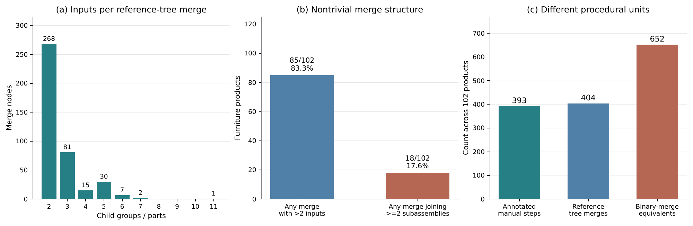
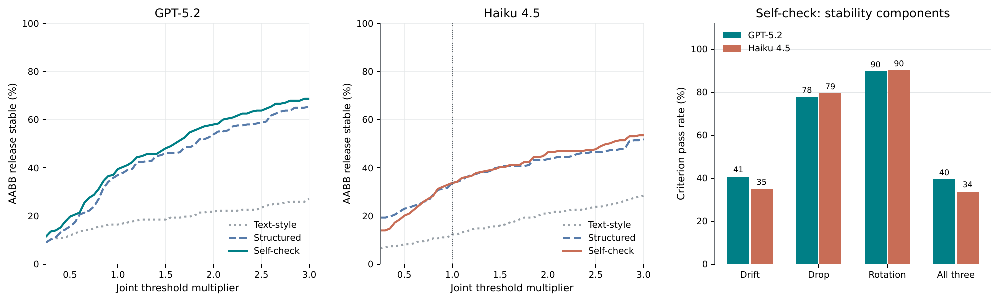
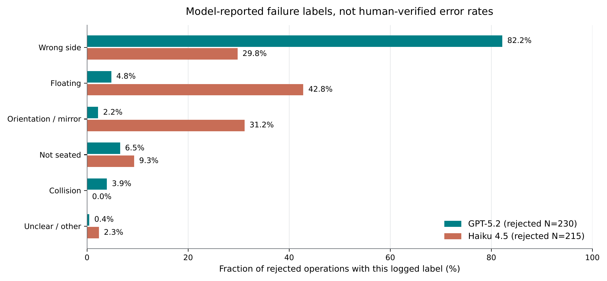
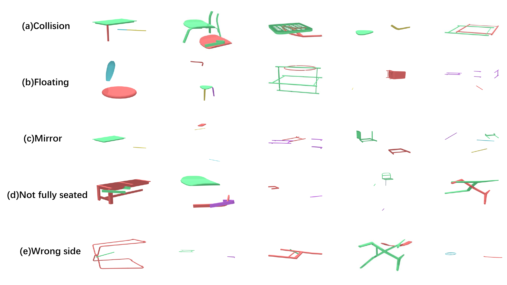

Abstract
Multimodal large language models have made significant progress in visual understanding, but precise 3D spatial reasoning in a physical environment remains difficult. Furniture assembly requires recovering operations from diagrammatic manuals and translating semantic attachment relations into 6D pose updates. We introduce AssemState, a zero-shot framework that combines anchor-guided assembly-structure recovery with iterative after-state feedback for pose refinement.
Under the supplied numbered-step-mask protocol, AssemState improves reported assembly-tree F1 from 38.58% to 62.80% and Tree Exact Match from 28.24% to 53.92%. On 243 independently evaluated operations, three-round refinement improves GPT judge acceptance from 0.0% to 5.3% and reduces mean Chamfer distance from 5.4111 to 1.7744. Strict pose accuracy remains zero: collision, floating, mirror orientation, incomplete seating, and wrong-side attachment persist. The results reveal improvements in structure recovery and selected local pose diagnostics, together with continuing limitations in contact-level spatial reasoning.
From Manuals to Assembly Structure
Ground numbered parts, identify boundary anchors, and track how subassemblies are carried across the manual.


Refine the Predicted After-State


A Closer Look at the Inputs
Five illustrative inputs from Bench/applaro, matching the files consumed by the released planner.

Experimental Results
Structure recovery, pose estimation, release validation, and additional analyses. Values below follow the paper.
| Method | Precision ↑ | Recall ↑ | F1 ↑ | Tree EM ↑ |
|---|---|---|---|---|
| SingleStep | 10.78 | 10.78 | 10.78 | 10.78 |
| GeoCluster | 13.37 | 13.36 | 13.15 | 3.92 |
| Manual2Skill | 37.45 | 36.41 | 36.83 | 27.45 |
| Manual2Skill++ | — | — | 38.58 | 28.24 |
| Ours w/o Anchors | 57.39 | 55.90 | 56.20 | 45.10 |
| AssemState | 62.34 | 62.46 | 62.80 | 53.92 |
Manuscript-reported scores; full historical tree predictions are unavailable. The reported F1 (62.80) exceeds the mean of P/R (62.40), which requires clarification of the original aggregation. The release preserves the paper values without claiming to have reproduced them.
| Backbone / setting | Judge acc. (%) ↑ | RMSEt ↓ | GD (°) ↓ | CD / Median CD ↓ |
|---|---|---|---|---|
| GPT-5 · Text-only | 0.0 | 2.4322 | 123.02 | 15.7263 / 10.1914 |
| GPT-5 · Open6DOR-style | 0.0 | 1.8747 | 120.84 | 5.4111 / 0.9391 |
| GPT-5 · Self-check, 3 rounds | 5.3 | 1.8898 | 121.52 | 1.7744 / 0.8112 |
| Haiku 4.5 · Text-only | 0.8 | 2.4315 | 125.61 | 18.7281 / 13.8936 |
| Haiku 4.5 · Open6DOR-style | 4.5 | 1.8887 | 123.20 | 10.8826 / 3.2725 |
| Haiku 4.5 · Self-check, 3 rounds | 11.5 | 1.9760 | 123.69 | 10.6708 / 1.8770 |
55 correct-tree products; 243 independent operations per setting. PA@0.01 = 0.0000 for every setting. Judge acceptance is a model-based diagnostic, not independently verified pose correctness. Backbone labels follow the main paper; the preserved appendix trace records gpt-5.2.
| Backbone / setting | Stable (%) ↑ | Mean drift ↓ | Mean Z drop ↓ |
|---|---|---|---|
| GPT-5 · Text-only | 16.5 | 0.4249 | 0.1696 |
| GPT-5 · Open6DOR-style | 37.0 | 0.2463 | 0.1058 |
| GPT-5 · Self-check, 3 rounds | 39.5 | 0.1754 | 0.0632 |
| Haiku 4.5 · Text-only | 12.3 | 0.4254 | 0.0859 |
| Haiku 4.5 · Open6DOR-style | 33.7 | 0.3266 | 0.1328 |
| Haiku 4.5 · Self-check, 3 rounds | 33.7 | 0.3109 | 0.1262 |
Historical AABB release diagnostic: fixed parts are static boxes and only the moving box is dynamic. Stability requires drift < 0.05, Z drop < 0.05, and rotation drift < 12°. This tests coarse support, not fastening or connector-level assembly.
| Setting | Judge accept. ↑ | CD ↓ | Release stability ↑ |
|---|---|---|---|
| Open6DOR-style | 0/243 | 5.4111 | 90/243 = 37.0% |
| + Multi-view structured init. | 1/243 | 5.3113 | 109/243 = 44.9% |
| + Contact-aware self-check | 13/243 | 1.7744 | 96/243 = 39.5% |
The paper presents cumulative components. Archive auditing finds only 160/243 identical operation contexts between GPT structured and self-check, versus 243/243 for multi-view and self-check; this limits a strictly controlled interpretation. Release stability is not monotonically improved.
Representative Traces and Inference Settings
| ID | Name | Functional explanation |
|---|---|---|
| 0 | long side rail | Forms the long side of the bed frame and supports the slatted bed base. |
| 1 | slatted bed base | Provides the flexible sleeping surface that supports the mattress. |
| 2 | headboard/end frame | Closes one end of the bed and provides the headboard structure. |
| 3 | footboard/end frame | Closes the opposite end of the bed and helps stabilize the frame. |
This retained manual example is a bed, separate from the Bench/applaro inputs above. The available example ends at Stage 2; its final tree was not retained.
| Round | Incoming feedback | Incremental update | Saved after-state diagnosis |
|---|---|---|---|
| 0 | None | Δt = [0, 0, +1.50]; identity rotation | Rejected: wrong_side; contact and orientation incorrect. Move to a short end and rotate upright. |
| 1 | Previous wrong_side diagnosis and residual direction | Δt = [0, 0, −0.45]; +90° about world Y | Rejected: wrong_side persists; separated from panel end and not upright/perpendicular. |
| 2 | Updated wrong_side diagnosis and contact/orientation hints | Δt = [0, 0, +0.40]; +90° about world X | Rejected: wrong_side; still along the long side, not seated flush on an end face. |
Moving part 2 (side frame), fixed part 1 (seat panel). All three rounds remain rejected. Ground-truth rescue constructs later context only; it is not a successful predicted placement.
| Role | Model ID | Max image side | Reasoning effort |
|---|---|---|---|
| Proposer | gpt-5.2 | 768 | low |
| Selector | gpt-5.2 | 512 | minimal |
| Judge | gpt-5.2 | 512 | minimal |
Completion-token caps: proposer 2048; selector/judge 512. Image detail: high. One candidate per round, at most three rounds. These settings describe the retained trace, not every aggregate experiment.
Additional Experimental Analyses






Where Spatial Reasoning Still Fails
A plausible coarse placement can still choose the wrong contact side, mirror orientation, or seating relation.


BibTeX
@misc{qi2026assemstate,
title={AssemState: Manual and Physical-State-Guided Reasoning for Zero-shot Furniture Assembly},
author={Zhiyuan Qi and Jierui Li and Yifan Shen and Cheng Qian and Jiateng Liu},
year={2026},
eprint={2610.08446},
archivePrefix={arXiv},
primaryClass={cs.AI},
url={https://arxiv.org/abs/2610.08446}
}